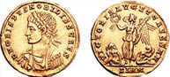

Çemberlitaş’ın Kutsal Gizemi
Konstantin Forumu’nun ortasına yerleştirilen dikilitaşın (Çemberlitaş) özelliği, salt üstünde yükselen Büyük Konstantin heykeli değildi. Kaidesi, belki de anıttan daha büyük bir önem taşıyordu.
Heykelsiz haliyle 57 metre yüksekliğindeki dikilitaş, temelden yukarı doğru küçülen üç kaide üzerine oturtulmuştu. Bu kaidelerden en dipte ve en büyük olanı, “kutsal” kabul edilen porfir taşından 11x11 metre çapında ve 2,5 metre yüksekliğinde yekpare bir kütleydi. Büyük Konstantin işte bu ana kaidenin içine bir hücre oydurdu. Konstantin’in yaşamı boyunca sarsılmaz bir güvenle sevip saydığı tek insan, Augustus (Yüce) ünvanı verdiği annesi İmparatoriçe Helena, Kudüs haccından getirdiği kutsal kalıtları bu hücreye kendi eliyle yerleştirdi. Sonra yekpare porfir kütlesinde hücreye doğru açılan dar tünel özenle dolduruldu ve tıpkı piramitlerde olduğu gibi girişi asla bulunamayacak biçimde, büyük olasılıkla kütleden daha önce kesildiği yere tıpatıp oturan bir porfir parçasıyla kapatılıp gizlendi.
Taşın içindeki hücreye saklanan ve Hıristiyan öğretisine maddi dayanak oluşturup “Kutsal Emanet” efsanelerini besleyen kalıtların neler olduğuna ilişkin rivayet muhtelif.
Kimi kaynaklar, gizli hücreye İsa’nın mezarından getirilen toprak, çarmıha gerildiği Esas Haç parçaları, halkı doyurabilmek için çoğalttığı ekmek kırıntıları, bu ekmeklerin dağıtıldığı sepet kalıntıları, Mecdelli Meryem’in, İsa’nın çarmıha çivili ayaklarına sürdüğü merhem kabının yanı sıra Nuh’un, gemisini yaparken kullandığı baltanın konulduğunu iddia ediyor.
Kimi kaynaklara göre ise kalıtların arasında İsa’nın kaymaktaşından Kutsal Kâse’si, haça çakıldığı çiviler, Lut Peygamber’in asası ve Süleyman Peygamber’in som altından yedi kollu şamdanı bile var!
Çemberlitaş’ın dip kaidesindeki gizli hücreye ilişkin tarihçe, hem gerçeklik hem de sahtelik içermesi bakımından; semavi dinlerin esasını oluşturan “kutsal efsaneler”in nasıl yaratıldığına, nasıl üretildiğine de en görkemli PR örneklerinden biri sayılır.
Şöyle ki; bu tarihçede İmparatoriçe Helena’nın 327 yılında Kudüs’e hacca gittiği, kutsal mekânları zamanın Kudüs Metropoliti Makarios’un eşliğinde dolaştığı doğrudur. Bu mekânları gezerken, haç kalıntıları bulduğu da doğrudur. Ama kalıntının, üç yüzyılı aşkın süredir çürümeden ve kimseciklere görünmeyip Helena’yı bekleyen Esas Haç parçası olması elbette ki gerçekdışıdır!
Zaten Konstantin’in annesi de bu gerçekdışılığın farkındadır ki, İsa’nın çarmıha gerildiği tepede bulduğu, üstelik bir değil İsa’yla birlikte çarmıha gerilen iki hırsızınki de dahil üç haç kalıntısı arasından Esas Haç’a ait olanı, mucize testiyle ayırt etmiştir. Efsaneye göre Helena, haç parçalarını ölmekte olan bir kadının üstüne koymuş, kadını diriltip sağlığına kavuşturan parçanın Esas Haç’tan olduğu böylece anlaşılmıştır.
Kudüs’te, İsa’nın 327 yıl önce gerildiği haçı eliyle koymuş gibi bulan Yüce Helena’yı artık kim tutar? Hızını alamayıp İsa’nın, “Bu kanımdır!” diye şarap sunduğu Kutsal Kâse, çoğalttığı ekmek kırıntıları, sepet parçaları vb. de bulmuş olabilir.
Ama Çemberlitaş’ın kaidesine eliyle koyduğu kalıtlar arasında özgünlüğü tartışılmaz yegâne Kutsal Emanet, kuşkusuz Kudüs toprağıdır.
Mucizeler, tarih yazan büyük liderlerin ortak reçetesidir. Ne zaman zora düşseler, hop, bir mucize olur, kurtulurlar.
Gerçek şu ki, Büyük Konstantin’in annesi İmparatoriçe Helena, o çağlar için oldukça ileri sayılan 72 yaşında göze aldığı Kudüs yolculuğuna, tam da oğlunu kurtaracak “mucizeler” yaratmak kararlılığıyla çıkmıştı. Çünkü Roma’nın ilk Hıristiyan imparatoru, bir yıl önce İsa’nın öğretisinde bağışlanamaz en büyük günahı işlemiş ve tahtının birincil vârisi, oğlu Sezar Krispus’u öldürtmüştü. Taze Hıristiyan tebaa, iman ettiği tanrıya ters düşen imparatorun samimiyetini sorguluyor, semavi kutsallığını tartışıyordu.
Büyük Konstantin’in nikâhsız yaşadığı ilk eşi Minervina’dan olan büyük oğlu ve gerek ordunun, gerekse halkın favorisi veliaht Sezar Krispus’u 326 yılında niçin öldürttüğüne ilişkin iki varsayım var. 5. yüzyılda tarihçi Zosimus ve 12. yüzyıl tarihçisi Zonaras, parlak komutan Sezar Krispus’un üvey annesi Fausta’nın komplosuna kurban gittiğini öne sürüyor.
Bu komploya göre İmparator’un ikinci ve nikâhlı eşi Fausta, taht yolunu kendi soyundan vârislere açmak için Büyük Konstantin’i, veliaht ilan ettiği büyük oğlu Sezar Krispus’un cinsel tacizine maruz kaldığına inandırıyor. İmparator, öfkeden çılgına dönüp öz oğlunu öldürtüyor.
Ancak ilk torunu Krispus’u çok seven babaannesi İmparatoriçe Helena, bir hafiye gibi çalışarak, hiç hazzetmediği gelini Fausta’nın yalan söylediğini, genç Sezar Krispus’a iftira ettiğini ortaya çıkarıyor.
Acı bir pişmanlığa gark olan Büyük Konstantin, kendisini yalan dolanla kandırıp büyük günaha sokan nikâhlı eşini, en acılı ölüm biçimiyle cezalandırıyor: Fausta hamama girdiğinde, içinde yıkandığı havuzun suyu yavaş yavaş kaynatılıyor. Kraliçe kendini dışarı atmak için yaptığı her hamlede, havuzu kuşatan uşaklar tarafından suya itiliyor. Sonunda diri diri haşlanarak ölüyor.

Büyük Konstantin’in öldürdüğü oğul Sezar Krispus adına
bastırdığı solidus (sikke)
İmparatorun, adına altın sikke bastıracak kadar değer ve Sezar ünvanını verdiği oğlu Krispus’u öldürtmesine ilişkin ikinci varsayım, 6. yüzyılda Frenk tarihçi Grégoire de Tours’a ait. Buna göre Sezar Krispus ve üvey annesi Fausta, Büyük Konstantin’in iman ve devlet dini ilan ettiği Hıristiyanlığa geçmeyi reddedip pagan inançlarını sürdürüyorlar. Sezar Krispus, babasına karşı komplo kuruyor. Pagan inanç yakınlığından ötürü üvey anne Fausta’nın da komploda parmağı olması ihtimali var. Büyük Konstantin, darbe hazırlığını öğreniyor. Hem oğlunu hem de karısını öldürtüyor.9
Sezar Krispus ve Fausta’nın asıl katil gerekçeleri ne olursa olsun, özellikle veliahtın, hem de babası eliyle öldürülmesi, Roma tebaasını sarsmıştı.
Hele İmparatoriçe Helena, torunu maktul, oğlu katil bir ana olarak, tarifsiz acılar içerisindeydi. Sezar Krispus’un katlinden bir yıl sonra çıktığı hac yolculuğundan, oğul katili Büyük Konstantin’in büyük günahını hem Tanrı hem de tebaa nezdinde bağışlatacak mucizelerle dönmeliydi, nitekim öyle de oldu.
Uyduruk Esas Haç ve diğer Kutsal Emanet buluntuları, ilk Hıristiyan imparatorun tanrı katında da ayrıcalıklı olduğunun kanıtı ve bağışlanmaz günahının bile bağışlandığının işareti sayıldı.
Büyük Konstantin, Kudüs’ten gelen Esas Haç’ın bir parçasını eski Roma’ya, annesinin Yeni Roma’ya taşınmadan önce ikamet ettiği saraydan bozma Kutsal Haç Kilisesi’ne gönderdi.
Haçın bir başka parçası, daha önce tarif ettiğim gibi, Yeni Roma’daki Konstantin Kolonu’nun (Çemberlitaş) üstünde yükselen Apollon vücutlu Büyük Konstantin heykelinin eline tutuşturuldu.
Bir diğer parçası, İmparatoriçe Helena tarafından Çemberlitaş’ın dibindeki hücreye konulan Kutsal Emanetler’in arasında yer aldı.
Böylece dosta düşmana, Hıristiyan Roma İmparatorluğu’nun Hıristiyan başkentinin Nova Roma (İstanbul) ve Kutsal Emanetler’in mahfazası Konstantin Kolonu’nun (Çemberlitaş) da Hıristiyanlık âleminin mihenk taşı olacağı ilan ediliyordu!
324 yılından beri süren Yeni Roma’nın imarı, on binlerce işçi ve zanaatkârın gece gündüz ara vermediği, hummalı bir çalışmayla sürüyordu. Roma egemenliğindeki tüm Avrupa ve Asya kentleri emperyal emirle talan ediliyor, en değerli hazineleri, sanat eserleri, heykelleri, anıtları yeni başkente taşınıyordu.
Dünyanın merkezi olacağı anlaşılan kent hakkında, daha yapımı sürerken efsaneler üretilmeye başlanmıştı. Örneğin surlarının nereden nereye kadar uzanacağını, bizzat imparatorun kılıcıyla çizdiği anlatılıyordu. Surların uzunluğuna şaşıran mimar ve ustalara, “Önümde giden bana dur diyene kadar ilerleyeceğim!” demişti. İmparatorun önünde kim gidebilir?
İmparatorun önüne kimse geçemeyeceğine göre, Tanrı’sı “dur” diyene kadar uzamıştı Konstantin’in kılıcıyla çizdiği surlar...
Büyük Konstantin, parlak hükümranlığının zirvesinde, tahta çıkışının yirmi beşinci yıldönümünü kutlamak üzereydi. Tepeden tırnağa kendi zevkine göre kurduğu yeni başkentin açılış merasimini, işte bu Gümüş Jübile kutlamalarına denk getirdi.
11 Mayıs 330 sabahı, İmparatorun inançlarında özgür bıraktığı pagan halk tapınaklarda, Hıristiyan ahali kiliselerde toplandılar. Büyük Konstantin, Aya İrini’de yapılan ayine katıldı.
Gerek Aya İrini ve diğer kiliselerde, gerekse pagan tapınaklarında İmparator ile başkentin bereket ve bekası için dualar edildi.
Büyük Konstantin, eseri olan kenti Bakire Meryem’e ithaf etti.
Aya İrini’deki görkemli ayin, Roma İmparatorluğu’nun yeni başkenti İstanbul’un tarihe doğuşu sayıldı.
Kentin resmî adı, yapımı henüz biten Adalet Sarayı’nın üstüne gururla kazınmıştı: Nova Roma. Ama Nea Roma diye de anılıyordu.10
Zaten Roma’nın gerek pagan, gerek Hıristiyan tarihini incelerken asla unutulmamalıdır ki, tarihin gelmiş geçmiş bu en büyük imparatorluğu, Antik Yunan uygarlığının vârisi ve Batı’dan Doğu’ya Akdeniz’e kıyısı olan tüm mülkü, eski Yunan mülküdür. Dolayısıyla Roma’nın resmî dili Latince olmasına karşın, fetih topraklarında daima Yunanca vardı ve yer adlarından dinsel tanımlara her iki dil, daima iç içeydi.
İsa’dan sonraki ilk 50 yılda öğretisi “Müjde” ya da “Yol”, müminleri İsevi ve İsa’nın doğum yerine atfen Nasrani diye anılan ikinci tektanrılı dinin adı da Yunanca konuşan Antakya’da konuldu.
Antakyalı müminlerce İsa’nın Yunanca karşılığı Hristos’tan türetilen Hıristiyan kavramı, Yeni Ahit’in 70 ile 80 yılları arasında yazılan beşinci bölümü “Resullerin İşleri”nde yer aldıktan öteye, evrenselleşti.
9 Tarih, bazen lanetli kaderlerin tekrarından ibarettir: Büyük Konstantin’den 1120 yıl sonra adı İstanbul olarak değişen aynı payitahttan, dini İslam’a, adı Osmanlı’ya dönüşen aynı memalike hükmeden Kanuni Sultan Süleyman da nikâhsız zevcesi Güldünya Hatun’dan olan ilk oğlu, halkın ve ordunun en sevdiği veliahtı Şehzade Mustafa’yı öldürtmüştür. Bu evlat katli de kâh nikâhlı eş, üvey anne Hürrem Sultan’ın entrikası, kâh Şehzade Mustafa’nın babasına kurduğu komployla gerekçelendirilmiştir. Ancak lanetli benzerlik bu kadarla sınırlı değildir: Büyük Konstantin’in de, Kanuni Sultan Süleyman’ın da üçer oğlu sağ kalmış, taht kavgasında onlar da birbirlerini öldürmüş ve her iki imparatordan sonra, her iki mülk için de duraklama devri başlamıştır. Tarihin bu garip cilvesi, Destina (Literatür, 2008) adlı romanımın konusudur.
10 Yeni Roma’nın Latince ve Yunanca karşılıkları.